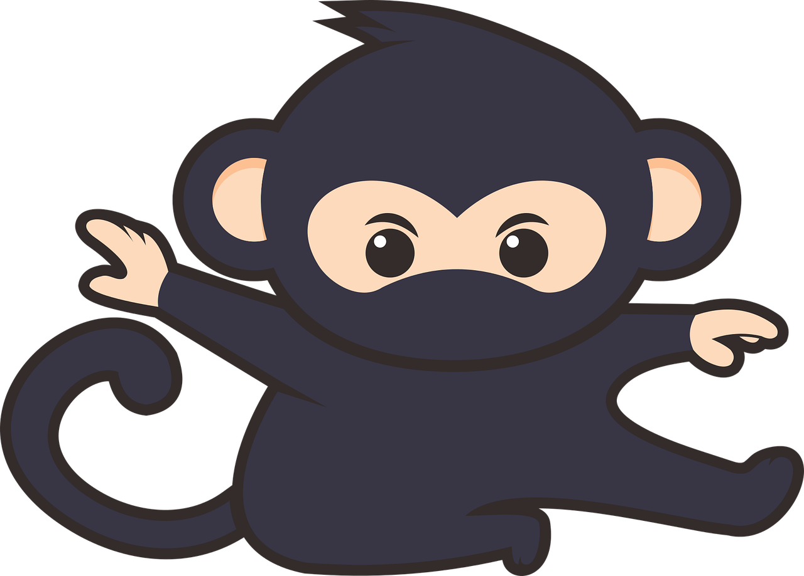

Urheilu
Urheiluvedonlyönti
Urheiluvedonlyönnissä häviät rahasi myös suurella todennäköisyydellä, koska voittokertoimissa on myös laskettavissa palautusprosentti joka voi olla joskus räikeästi alle sadan prosentin. Talo ottaa tämä avuin komission, kun pelaat vedonlyöntikohteita. Urheiluvedonlyöntiä on kuitenkin mahdollista tehdä voitollisesti, jos sinulla on tarpeeksi hyvä asiantuntemus lajista jota pelaat.
Esimerkiksi formulat, vapaaottelu ja snooker ovat lajeja, joissa voi tehdä voittoa jos seuraa paljon lajia. joukkuelajeissa kuten jalkapallo ja jääkiekko on nykyisin vaikeampaa pärjätä ja vedonlyönnin markkinat näihin lajeihin ovat melko ankarat ja suuria ylikertoimia on vaikea löytää.
Monesti suomalaiset tuulipuvuissa kioskille säntäävät viihdepelaajat täyttävät kahvipöydässä veikkauksen kuponkeja. Moni myös suuntaa pelaamaan veikkauksen nettisivuille, jossa voi urheiluvedonlyönnin lisäksi laittaa samalla lotot tulille ja pelata myös rahapelejä.
Veikkauksen vedonlyöntikertoimet eivät ole markkinoiden parhaasta päästä, ja siksi on hyvin tärkeä tehdä tili monelle muulle bookkerille. Menestymisen kannalta on tärkeää saada markkinoiden paras kerroin pelikohteesta mihin sijoittaa. Pitkällä aikavälillä tällä on suuri merkitys sille että pystyykö tekemään voittoa. Vaikka vedonlyöntisi ei olisikaan voitollista, ainakin häviät varmasti vähemmän rahaa kuin pelaamalla pelkästään yhdelle välittäjälle.
Vedonlyönnin ammattilaiset
Suomessa toimii ainoastaan kourallinen vedonlyönnin ammattilaisia. Ammattilaisilla on useasti erilaisia kerroinlaskenta menetelmiä, jotka auttavat heitä onnistumaan paremmin voitollisessa toiminnassa. Nykyisin on internetti pullollaan erilaista dataa ja informaatiota, jonka avulla käyttäen erilaisia ohjelmia, pystyvät ammattilaiset analysoimaan dataa ja laskemaan todennäköisyyksiä.
Ennen vanhaan kertoimet olivat kiinteitä ja pysyivät samana ottelun alkamiseen saakka. Nykyisin kertoimet vaihtelevat tilanteen mukaan riippuen siitä kuinka paljon kyseistä kohdetta pelataan, tai tapahtuuko jotain merkittävää ennen pelattavan kohteen alkamista. Pelaajan täytyy pystyä reagoimaan tähän nopeasti tarpeen mukaan. Joskus kuitenkin markkina voi ylireagoida esimerkiksi jonkun tähtipelaajan loukkaantumiseen, joka antaa hyvän mahdollisuuden pelata vastapalloon markkinaa.
Ammattilaisilla on pelkästään vedonlyöntiin tarkoitettu reilun kokoinen pelikassa. He panostavat siitä maksimissaan noin 2 prosenttia jos kerroin on todella houkutteleva. Panos määräytyy kuitenkin pääasiassa sen mukaan, että kuinka hyvä ylikerroin on tarjolla pelivalikoimassa. Kassanhallinta hyödyttää myös viihdepelaajia, koska viisas panostaminen johtaa parempiin tuloksiin, eikä pelaajan tarvitse jatkuvasti tallentaa pelitilille lisää rahaa.
Kertoimet
| Painoluokka | Ottelijat | Kertoimet |
|---|---|---|
| 135lbs | Maria Anders vs. Marie Bertrand | 1.7 | 67 | 2.5 |
| 115lbs | Christina Berglund vs. Lina länsberg | 1.8 | 67 | 2.3 |
| 170lbs | Francisco Chang vs. Simon Crowther | 4 | 67 | 1.3 |
| 185lbs | Roland Mendel vs. Giovanni Rovelli | 6 | 67 | 1.12 |
| 135lbs | Helen Bennett vs. Juliana pena | 1.5 | 67 | 2.8 |

Vapaaottelu vedolyöntinä
Itse pelaan vain ainoastaan vapaaottelua vedonlyönnissä, koska olen itse harrastanut sitä sekä seurannut lajia yli kymmenen vuotta. Kun pelaa vapaaottelua, täytyy kuitenkin käyttää paljon aikaa otteluvideoiden analysointiin. Olen huomannut, että mitä enemmin analyysiin käyttää aikaa, sitä paremmin todennäköisesti menestyy pitkällä aikavälillä. Toki myös ottelijoiden tilastot tulee käydä läpi hyvin huolellisesti.
Useimmiten se mikä päätee muuhunkin urheiluvedonlyöntiin, se tulee useasti esiin vapaaottelun veikkaamisessa: Uskalla olla suuren massan kanssa eri mieltä. Hupipelaajat haluavat nähdä tyrmäyksiä ja hienoja lopetuksia matossa lukoilla tai kuristuksilla ja usein pelaavat sen puolesta. Markkinoilta saattaa siis löytyä hyvää pelattavaa, esimerkiksi kun asettaa pelimerkit tylsemmälle ottelijalle ja vaikka pistevoitolla.